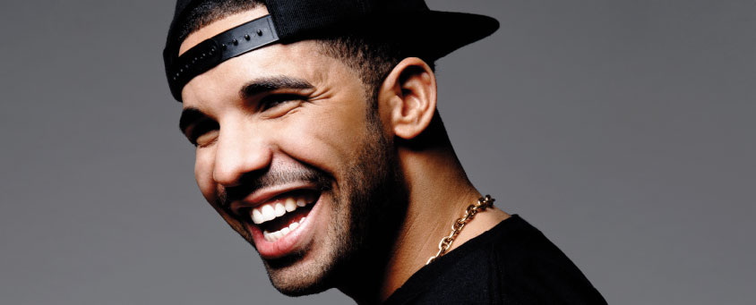
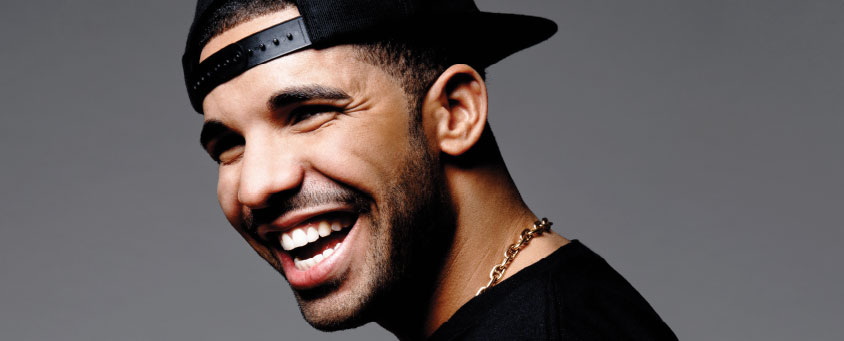

Aubrey “Drake” Graham is a Grammy-Award winning, platinum-selling recording artist and multi-faceted entertainer.
Born in Toronto on October 24th, 1986, Drake is the son of Sandi and Dennis Graham, a drummer who worked with Jerry Lee Lewis. His father is African American, a native of Memphis, Tennessee and his mother is Jewish Canadian. Drake’s interest in performing began at an early age. From summers spent with his dad in Memphis, he gained an appreciation and understanding for music that would later influence the sound he would create in years to come.
Since first being recognized for his role on the highly-successful television series Degrassi: The Next Generation, and going on the road with rap star Lil Wayne after hearing Drake’s music in the summer of 2008, Drake has asserted himself as a trailblazer in the creative world. Drake released his mixtape So Far Gone in 2009 and his massive influence in the hip-hop and contemporary music space has commanded the market since, with no end in sight. Drake now holds the record for the most number one hits on Billboard’s R&B/Hip-Hop Chart.
As The New York Times Jon Caramanica writes, “So it’s gone with Drake, hip-hop’s current center of gravity, his success a reminder of so many of the victories hip-hop has won in the last couple of decades: the right to be decadent, sure, but also the right to reimagine any style of music, the right to be emotionally complicated, the right to be unusual. He confounds expectations. He raps about soft things, sings about hard things. Thanks to his versatility, he is the glue that binds together all of urban radio.”
Drake has catapulted into stardom not only as an artist, but as a cultural maven with October’s Very Own. Sharing the story of the thriving music scene in Toronto, Drake has built out OVO from a small-scale blog about his crew to an all-encompassing lifestyle brand, including his clothing company, his record label OVOSOUND and his annual OVOFEST.
Drake has reached great heights in recent years and he continues to create and dominate the global market. As Drake says, “It’s about the experience. If the city isn’t talking about it five, six, seven days later, or if people don’t remember it for years to come, then I haven’t done my job…I’m going to find out what comes after this, but there’s definitely another evolution of Drake.

 
